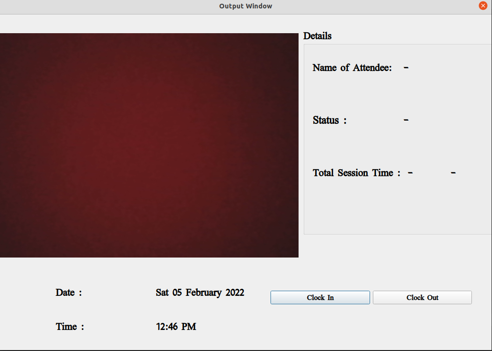

Attendance System

Facial recognition is not much used technique to mark attendance or used for any record. Facial recognition is mostly seen in android phones for unlocking and access to grant access to the phone. The most used technique of attendance in many MNCs is biometric system but facial recognition can also be used for the same task.
This project deals with recognition of faces, and after successful recognition of the person, it marks attendance against it. The marked attendance is saved into an excel the spreadsheet containing name, date, clock-in, and clock-out time. The project also contains GUI for user-friendliness. The GUI of the project is designed using QT designer framework.
There were several libraries which were used in the project, some of them include: Dlib, Open-cv, Numpy, Face-recognition, and C-make
Dlib is a modern C++ toolkit containing machine learning algorithms and tools for creating complex software in C++ to solve real-world problems. OpenCV is a great tool for image processing and performing computer vision tasks. It supports multiple languages including python, java, C++. NumPy is a Python library used for working with arrays. Recognize and manipulate faces from Python or from the command line with the world’s simplest face recognition library.